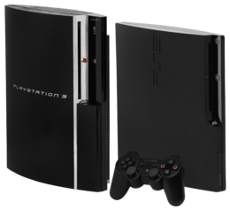

|
La PlayStation 3, abbreviata con la sigla PS3™, é una console per
videogiochi prodotta dalla Sony Computer Entertainment e disponibile dall'11 novembre 2006 in Giappone.
Fa parte della settima generazione di console, e compete commercialmente con il Wii di Nintendo e la Xbox 360 di
Microsoft. La PlayStation 3 é stata prodotta in tre versioni differenti: Fat, Slim e Super Slim.
Sony ha ufficialmente annunciato la PlayStation 3 Slim (il nome ufficiale rimane PlayStation 3) il 18
agosto 2009. La console prevede un hard disk con taglio da 120 o 250 GB, una riduzione delle dimensioni del 33%
rispetto all'originale,un alleggerimento del 36% e un consumo di corrente elettrica inferiore del 34% rispetto al modello precedente.
La PlayStation 3 Slim prevede l'adozione di un nuovo design di colore nero opaco, con logo PS3 ridisegnato e
altri piccoli particolari come per esempio lo spostamento del bay per l'estrazione dell'hard disk.
|

|